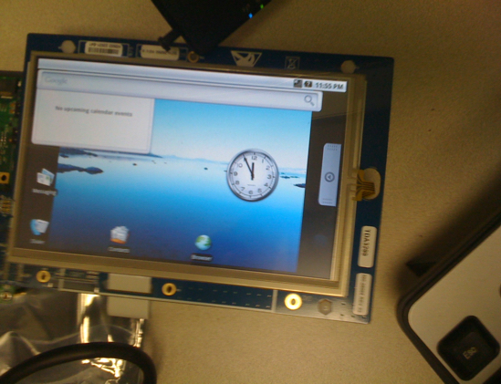

The 2-in-1 IMERJ Smartphone was the most complex project I have worked on. Right out of university, I had the option to work as a Program Manager at Microsoft, or join a small R&D team at Flextronics working on an ambitious product as a Software Engineer. My take on it was simple - I figured in order to understand how to build something I should learn it ground up. I took a leap of faith and joined as the 6th member of a team.
"One of the most important skills required while programming is perseverance."
When I joined, the product was still in an idea stage. There was no expert or mentor to guide me - I had to navigate 8 million lines of the Android operating system to figure out what to do. I had little confidence in my coding abilities and felt like I was shooting in the dark. Slowly but steadily I started piecing together a story.

The first prototype - we got $10M USD by getting 2 apps to run side-by-side on it
"Dar ke aage jeet hai" (When you defeat fear, victory awaits)
From my initial fear of failure, I was now confidently charging ahead. I enjoyed designing a system and found a lot of creativity in the process. I took the lead in developing one of the most critical components of the system - the Android application lifecycle for the dual screen phone. I played a key role in acquiring our first round of funding of $10M USD. I owned this feature from design to implementation, and was awarded two patents for it.
The final dual screen Android smartphone
I discovered my passion for building products through this experience. It aroused a curiosity in me and has given me the belief that I can learn anything. It instilled confidence in me to quit my job and start working on Classalyze.